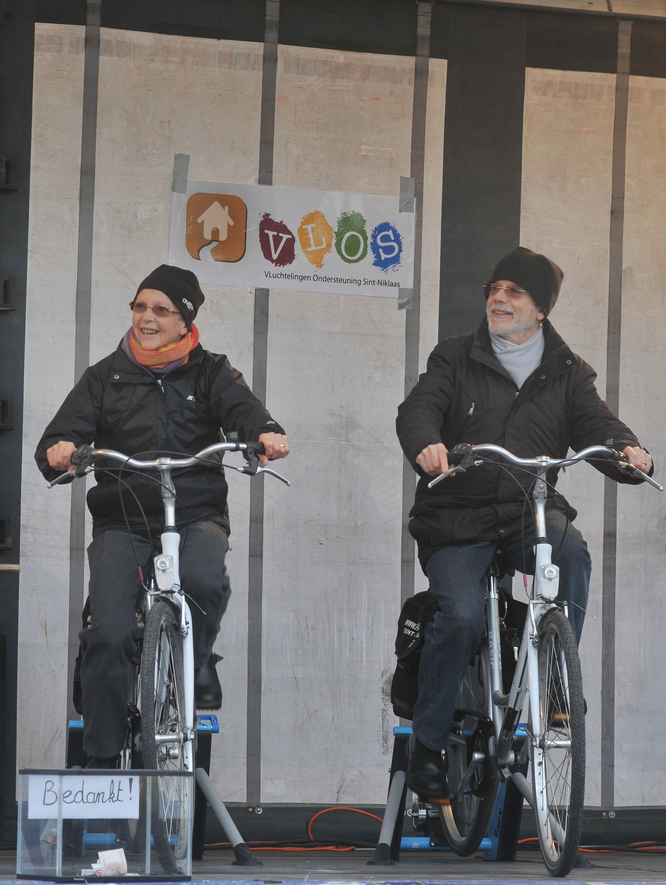
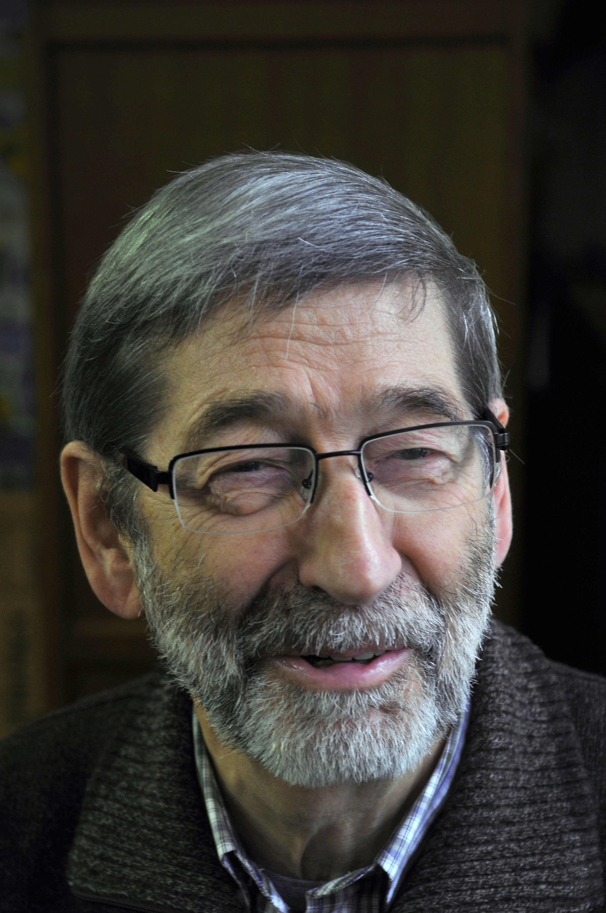
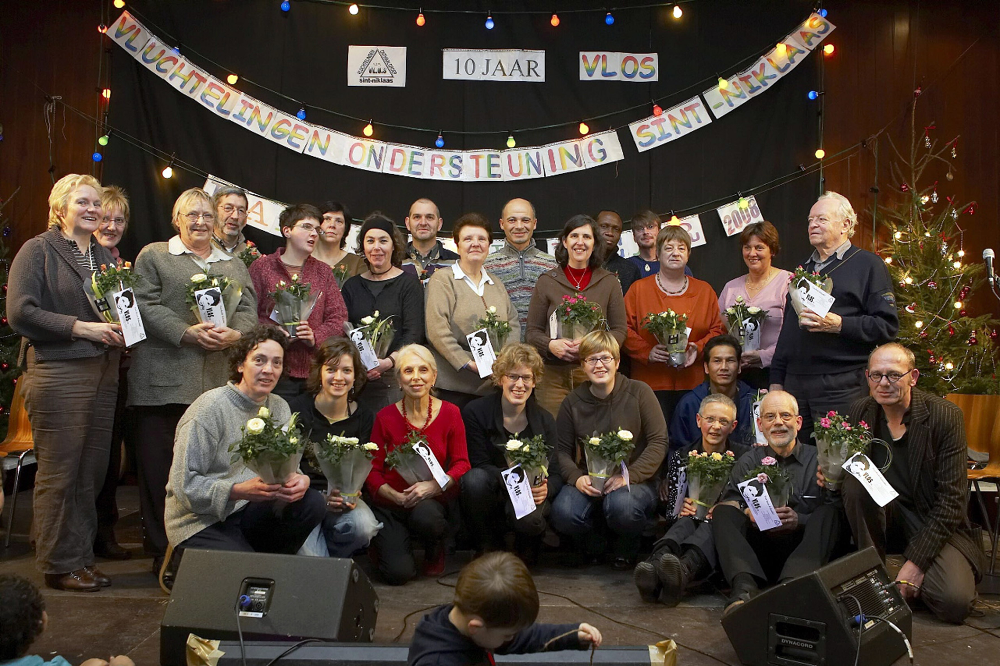
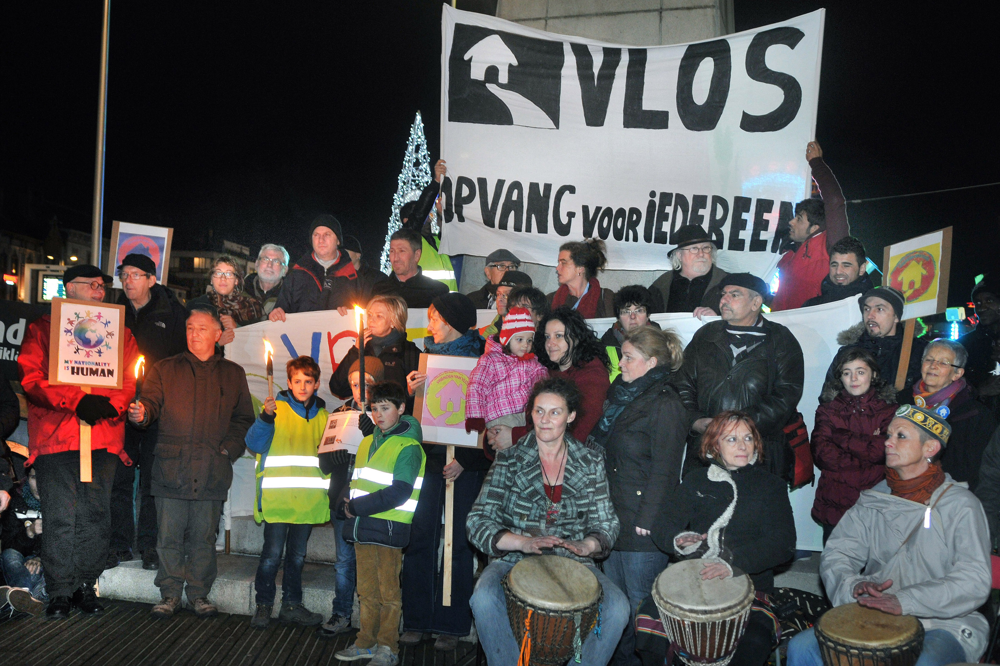
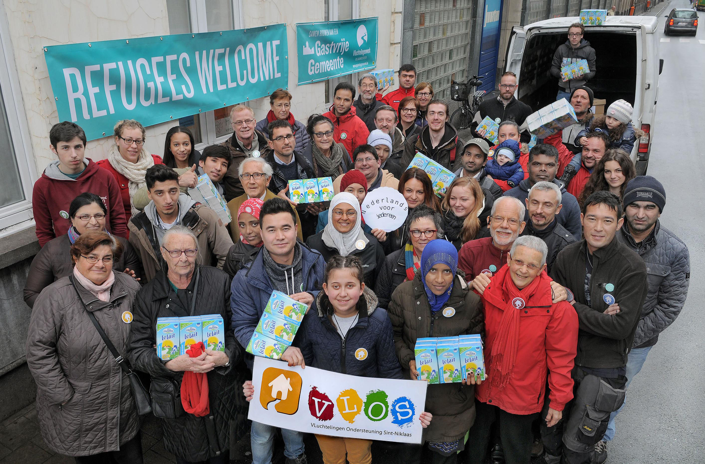

De grondleggers

Jozef & Tilly
[plaatshouder voor tekst]

Dokter Piet
[plaatshouder voor tekst]
Doorheen de jaren
VLOS ontstond in december 1997. Op vraag van het Provinciaal Steunpunt Vluchtelingen en het Centrum voor Algemeen Welzijn (CAW) startte een groep vluchtelingen en vrijwilligers met de werkgroep 'Vluchtelingen Onthaalgroep Sint-Niklaas', kortweg VLOS. Vanaf 2000 was VLOS niet langer een werkgroep, maar een officiële vzw.
Onze naam werd aangepast omdat het onthaal van vluchtelingen nu georganiseerd werd door het Rode Kruis Opvangcentrum Sint-Niklaas, Kasteelstraat 8. VLOS vzw heet nu: 'Vluchtelingen Ondersteuning Sint-Niklaas'.
Van bij het begin ging VLOS op zoek naar passende initiatieven en naar huisvesting voor vluchtelingen. In 1999 richtten twee vrijwilligers een VLOS-bazar op, waar vluchtelingen, gratis of tegen een minimumbedrag kledij, schoeisel, huishoudgerei en kinderspullen konden bekomen, later kwam daar ook een VLOS-kruidenier en VLOS-magazijn bij.
Een uitgebreidere geschiedenis vinden jullie hier: 10 jaar VLOS & 20 jaar VLOS.


